第四章：处理器架构与流水线设计¶
I. 单周期数据通路构建 (Building a Single-Cycle Datapath)¶
这一部分主要讲解如何将处理器的各个基础元件（寄存器、ALU、多路复用器、存储器等）逐步拼接起来，形成一个能够在一个时钟周期内完整执行指令的数据通路。我们将基于一个简单的 RISC-V 指令子集（如 lw, sw, add, sub, beq 等）来进行增量式构建。
数据通路定义：Elements that process or hold data and addresses in the CPU.
1.1 指令执行的通用步骤¶
对于所有的 RISC-V 指令，其执行的前两步总是相同的：
- 取指 (Fetch)：根据程序计数器（PC）的值，从指令存储器中取出对应的指令。
- 译码与读寄存器 (Decode & Read Registers)：根据指令中指定的寄存器编号，从寄存器文件（Register File）中读取一个或两个寄存器操作数。
接下来的步骤会根据指令的类别有所不同，但基本都包含以下操作：
- 使用 ALU 进行计算地址或者数据：用于算术/逻辑运算结果、计算访存地址或计算分支目标地址。
- 访问数据存储器 (Data Memory)：针对
Load/Store指令读取或写入数据。 - 更新 PC：将 PC 更新为下一条指令的地址（
PC + 4或分支目标地址）。
1.2 取指模块 (Instruction Fetch)¶
取指模块的核心任务是获取当前指令并更新 PC 准备获取下一条指令。
- PC 寄存器指向当前指令地址。
- 由于 RISC-V 指令长度固定为 32 位（即 4 个字节），因此计算下一条连续指令的地址只需将 PC 的值加 4。
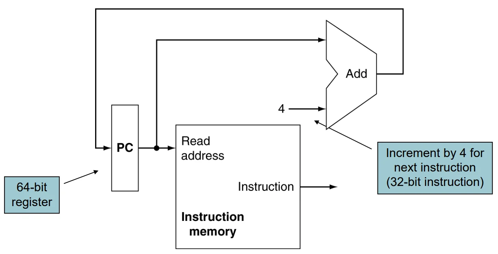
In RISC-V, PC is affected only indirectly by certain instructions. It is NOT an architecturally-visible register
1.3 R型指令数据通路 (R-Format Instructions)¶
R 型指令（如 add, sub）主要涉及寄存器之间的算术逻辑运算。
- 输入：从寄存器文件中读取两个源寄存器操作数（需要多端口寄存器文件支持）。
- 执行：ALU 根据指令要求进行(EX)算术/逻辑运算。
- 输出：将 ALU 计算的结果写回(WB)目标寄存器。
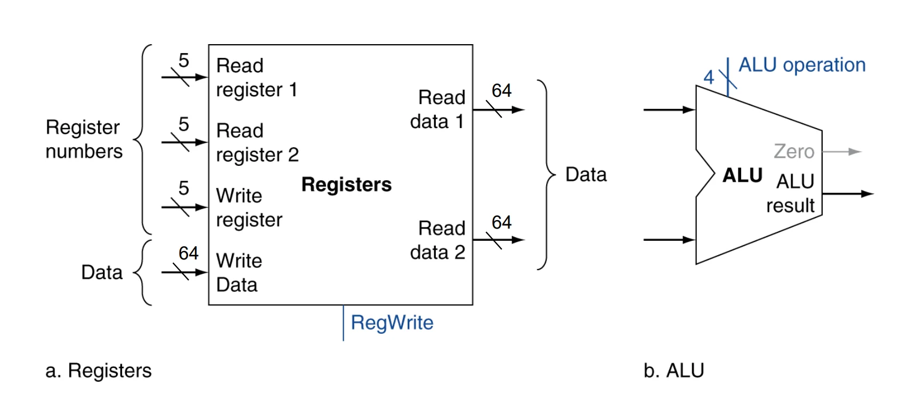
1.4 访存指令数据通路 (Load/Store Instructions)¶
访存指令（lw / sw）需要访问数据存储器，其核心在于内存地址的计算。
- 地址计算(EX)：读取基址寄存器的值，并加上一个 12 位的立即数偏移量（Offset）。由于 ALU 处理的是 64 位（或 32 位）数据，这个 12 位的偏移量需要先通过符号扩展 (Sign-extend) 转换为完整的字长。
- Load (加载)：从数据内存中读取该地址的数据，并更新回(WB)寄存器文件。
- Store (存储)：将第二个源寄存器中的值写入到计算出的内存地址中。
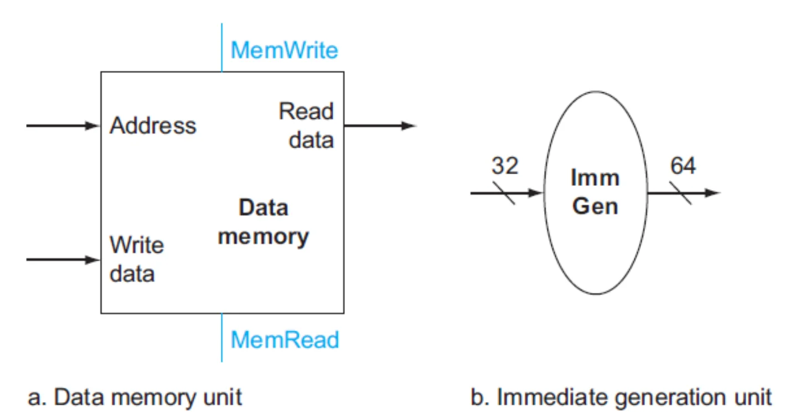
1.5 分支指令数据通路 (Branch Instructions)¶
以 beq (Branch if Equal) 为例，分支指令，例如：
需要完成比较和目标地址计算两件事：
- 比较操作数：读取两个源寄存器，送入 ALU 进行减法 (subtract) 运算。如果两个值相等，ALU 的
Zero标志位会输出 1。 - 计算目标地址：
- 将指令中的位移量（立即数）进行符号扩展。
- 左移 1 位 (Left shift by 1)：因为 RISC-V 的指令以半字（2字节）或字（4字节）对齐，最低位必定是0，所以指令中省略了最低位的0以扩大寻址范围，此处需要左移还原真实偏移量。
- 将偏移量与当前 PC 值相加，得到跳转目标地址。
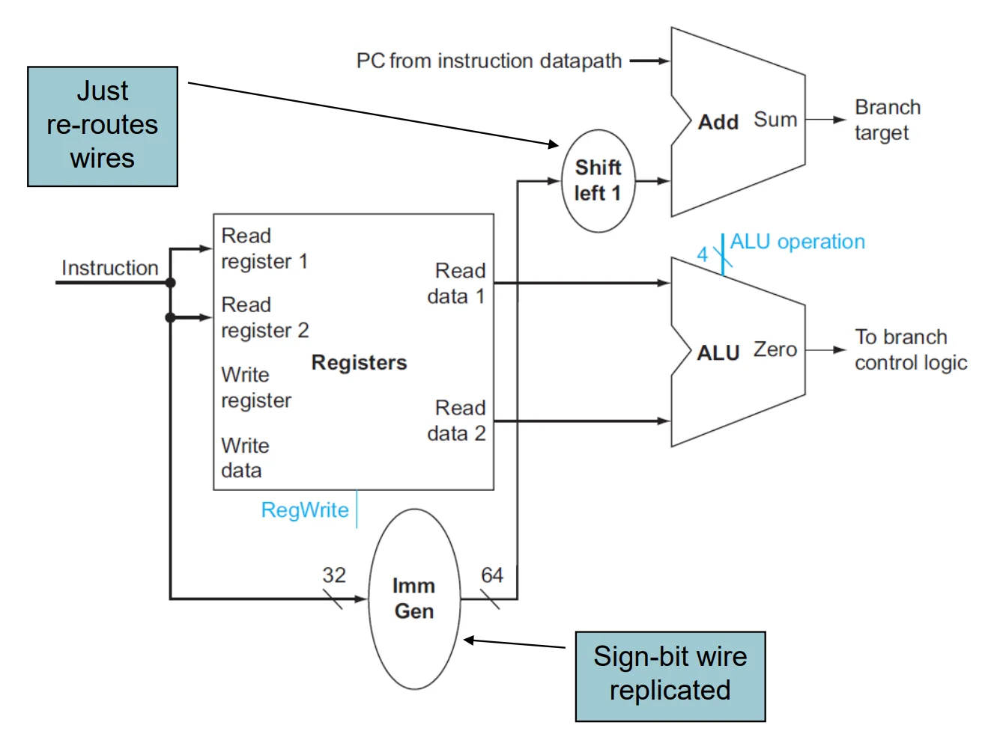
1.6 整合：完整的单周期数据通路¶
单周期数据通路的原则是一条指令必须在一个时钟周期内完成。这就意味着一个数据通路元件（如加法器、存储器）在同一周期内只能被使用一次。
- 因此我们需要分离指令存储器和数据存储器（这体现了哈佛架构的思想）。
- 当多条指令需要使用同一个部件但数据源不同的时候，我们需要引入多路复用器 (Multiplexers, Mux) 来进行数据路径的选择。
首先拼接 R型 与 访存指令 的数据通路（引入了控制 ALU 输入来源的 MUX 以及控制写入寄存器数据来源的 MUX）：
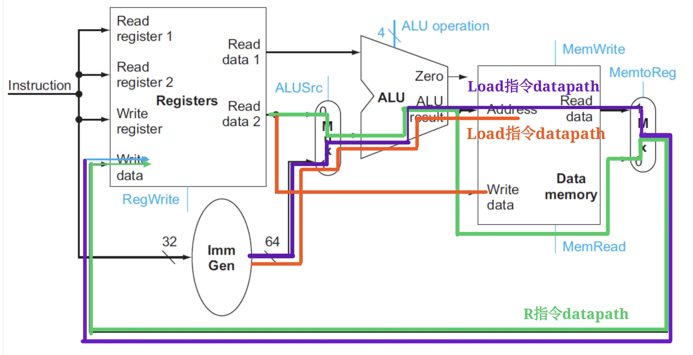
随后加上分支指令的数据通路（在 PC 的输入端引入 MUX，决定 PC 下一周期是 PC+4 还是 分支目标地址）：
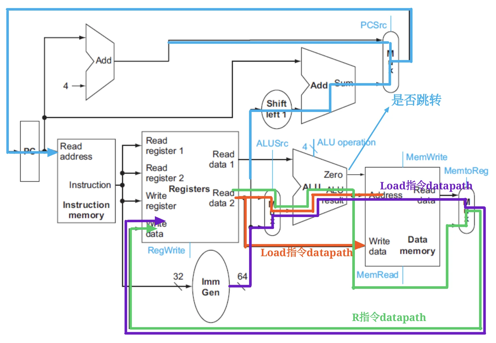
这是未经加入控制信号单元前，最完整的单周期裸数据通路全貌图。请注意观察图中各个多路复用器（Mux）的位置，它们为后续引入控制信号埋下了伏笔。
II. 控制单元设计 (Datapath With Control)¶
在搭建好包含各种多路复用器（MUX）的完整数据通路后，我们需要一个 “大脑” 来指挥这些硬件如何协同工作。这个 “大脑” 就是 控制单元 (Control Unit)。它通过分析指令的内容（主要是操作码 Opcode 等字段），生成一系列高低电平的控制信号，以控制数据流向和组件的行为。
2.1 引入控制信号的完整数据通路¶
主控制单元（Main Control）接收指令的低 7 位（Instruction [6:0]，即 Opcode）作为输入，产生对应的控制信号，用于控制：
- 多路复用器 (MUX) 的选择端（决定数据走哪条路，例如 ALU 的输入是寄存器还是立即数）。
- 组件的读写使能端（如寄存器写使能
RegWrite，内存读/写使能MemRead/MemWrite）。 - ALU 操作的大致方向（通过
ALUOp信号送给 ALU 控制模块）。
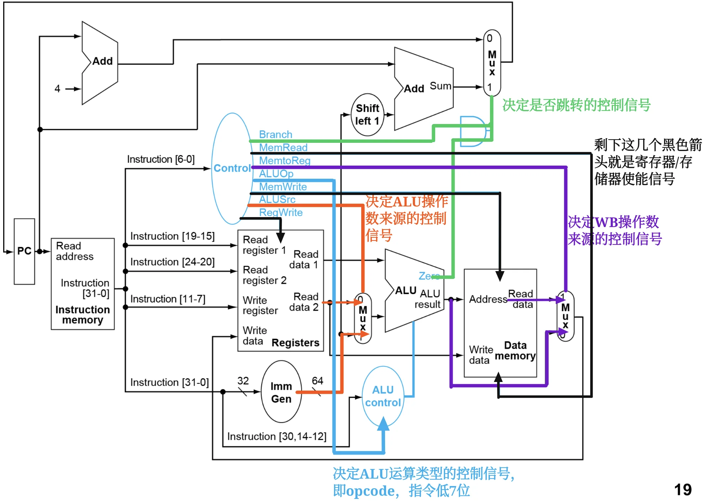
2.2 不同指令的控制路径图解¶
不同的指令在执行时，控制单元会激活数据通路上的特定路径。课件中展示了三种典型指令激活的路径：
-
R型指令 (如 add, sub)：控制单元让 MUX 选择第二个寄存器的值进入 ALU，并且选择 ALU 的计算结果写回寄存器，同时禁用数据内存的读写。
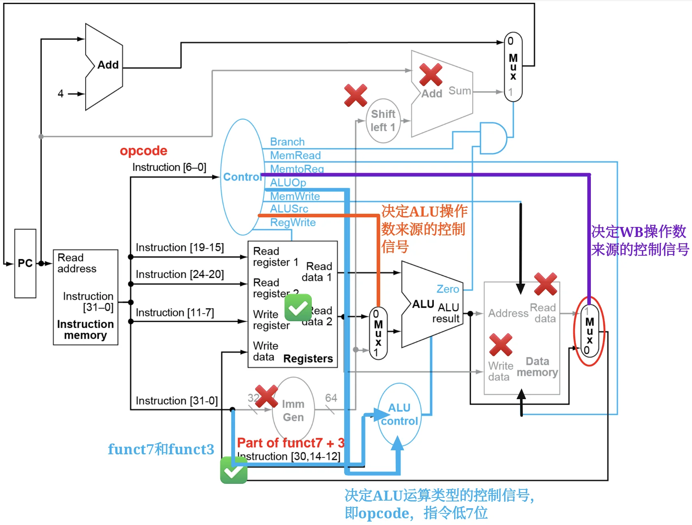
-
Load 指令 (I-Type，如 lw)：控制信号控制 MUX，将符号扩展后的立即数送入 ALU（用于计算地址），激活
MemRead读内存，并控制最后的 MUX 将内存读出的数据（Data of store）写回目标寄存器。
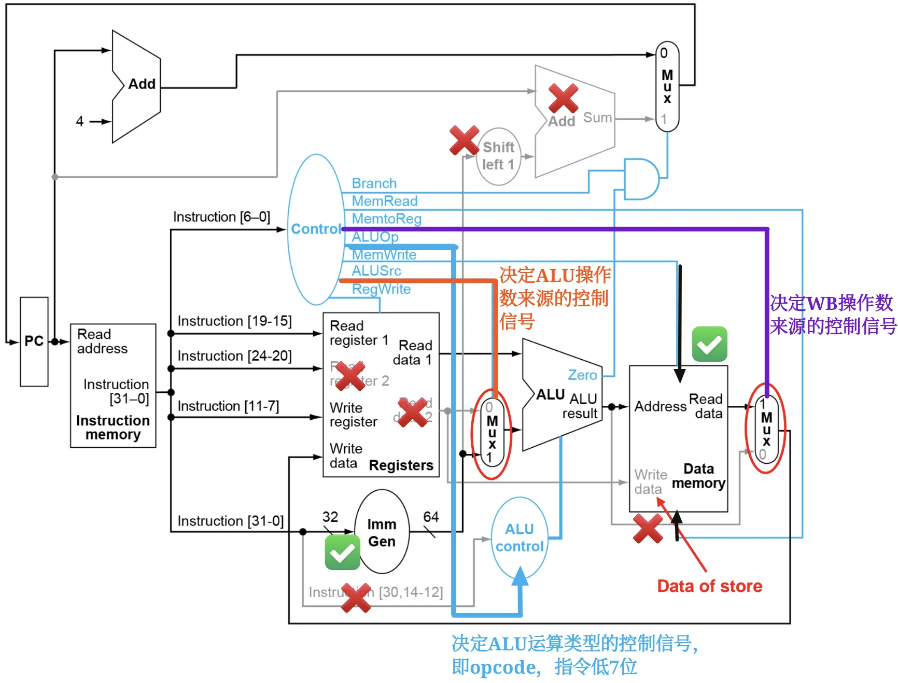
-
分支指令 (SB-Type，如 beq)：ALU 执行减法来比较寄存器是否相等。如果相等（ALU 输出
Zero = 1），且控制信号Branch有效，两者经过一个 AND 门，控制位于 PC 前面的 MUX，选择目标跳转地址作为下一个 PC 值。同时不需要写回寄存器或内存。
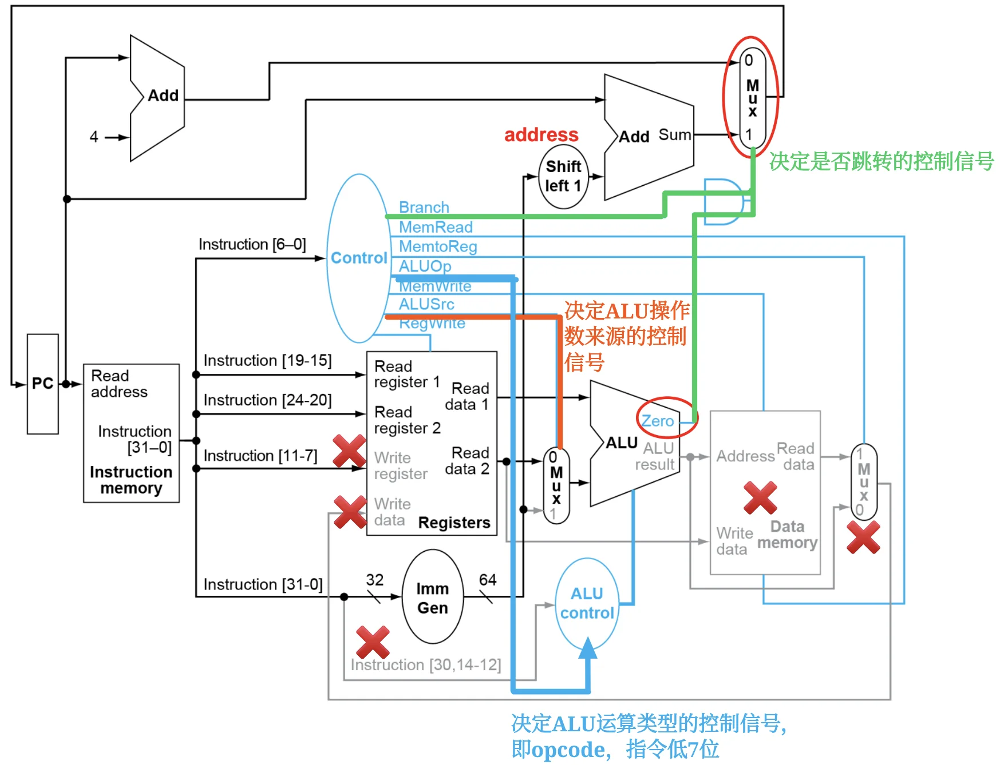
2.3 ALU 的多级解码控制 (ALU Control)¶
为了降低主控制单元的复杂性，RISC-V 采用了多级解码 (Multiple levels of decoding) 的组合逻辑设计：将控制分摊给主控制单元和 ALU 控制单元。
- 主控制单元：首先根据 Opcode 生成一个 2 位的
ALUOp信号，表示指令的大类操作：00：用于 Load/Store（需要做加法计算地址）。01：用于 Branch（需要做减法比较大小）。10：用于 R型指令（具体做什么运算需要进一步看指令的funct字段）。
- ALU 控制单元：接收主控制器发出的
ALUOp [1:0]信号，结合指令中的funct7（部分位数）和funct3字段，最终输出一个 4 位的 ALU 控制信号，直接指挥 ALU 执行具体的算术/逻辑操作（如 add, sub, and, or）。
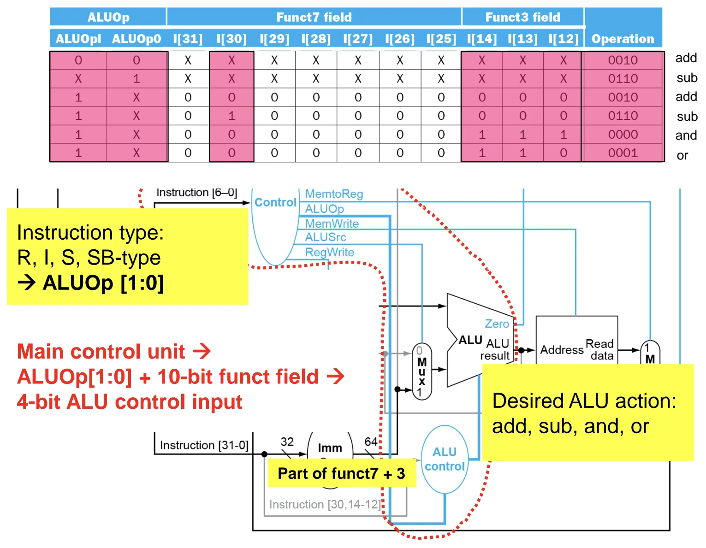
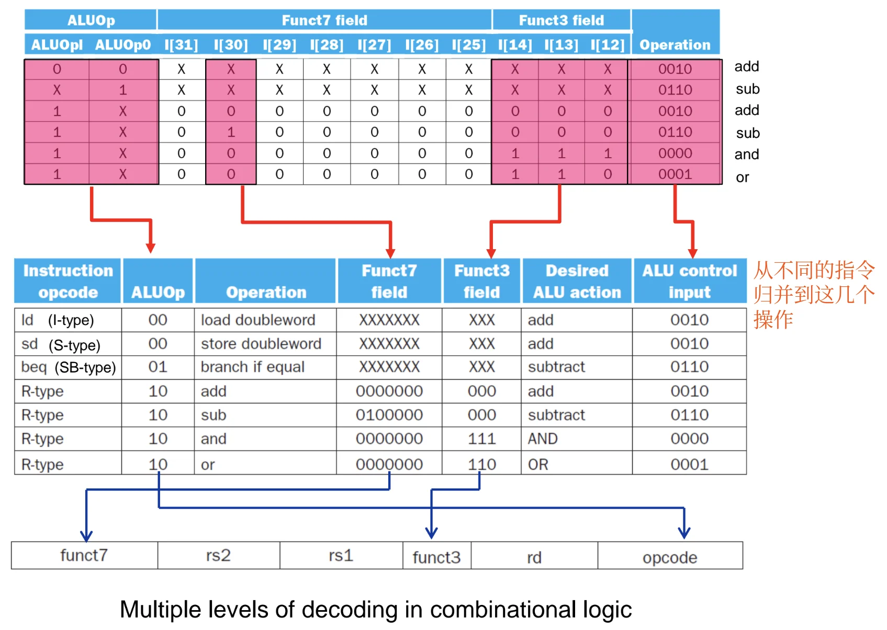
图表详细展示了
ALUOp结合funct7和funct3生成 4 位最终控制信号（0010/0110/0000/0001）的真值表逻辑及多级解码架构。*
2.4 主控制单元信号的直接推导 (Main Control Unit)¶
通过对 RISC-V 指令格式（R-type, I-type, S-type, SB-type）的字段划分可以看出，控制信号可以完全由当前指令的操作码纯粹通过组合逻辑推导出来。
- 操作码（Opcode）始终位于指令的最低 7 位
[6:0]。 - 无论指令类型如何，源寄存器
rs1和rs2的位置始终固定。 - 这种极具规律的设计，大大简化了控制单元的硬件复杂度。
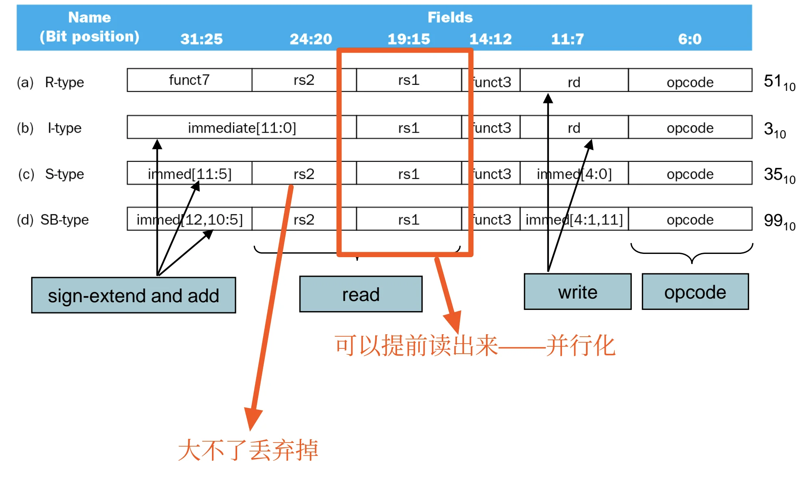
图中对比了各类指令的字段划分（如 immediate, rs1, funct3, rd, opcode 的固定位置），直观展现了 RISC-V 指令集规整性对控制单元设计的极大便利。
III. 流水线的基本概念与性能分析 (Overview of Pipelining)¶
前面设计的单周期处理器虽然逻辑清晰，但在实际应用中存在致命的性能缺陷。为了提升处理器的吞吐量，现代微处理器广泛引入了流水线 (Pipelining) 技术。
3.1 单周期设计的性能瓶颈¶
- 木桶效应：单周期处理器的时钟周期必须足以容纳耗时最长的那条指令（即关键路径）。
- 关键路径 (Critical Path)：通常是
Load指令。其路径覆盖了几乎所有组件：指令内存 \(\Rightarrow\) 寄存器文件读取 \(\Rightarrow\) ALU 运算 \(\Rightarrow\) 数据内存读取 \(\Rightarrow\) 寄存器文件写回。（课件示例中，Ld 指令耗时 800ps，导致时钟周期必须设定为 800ps）。 - 这种设计导致执行其他简单指令（如耗时仅 500ps 的分支指令）时，大量的时间和硬件资源处于闲置等待状态。
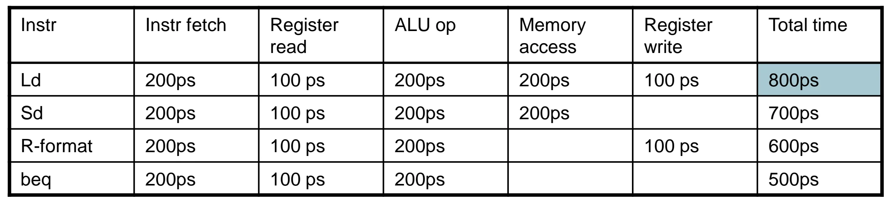
3.2 流水线的核心思想¶
流水线借鉴了工业流水线（如课件中的“洗衣服”类比）的思想，通过重叠执行 (overlapping execution) 来实现时间上的并行性 (Temporal parallelism)。
- 将一条指令的执行过程划分为多个耗时相近的子阶段。
- 每个子阶段由专用的硬件模块完成。
- 一条指令进入下一个阶段时，下一条指令立刻进入当前阶段。
- 核心优势：流水线通过提高整体吞吐量（Throughput）来提升性能，而并不是缩短单条指令的执行时间（Latency）。
3.3 RISC-V 的经典五级流水线¶
RISC-V 处理器的流水线通常被划分为以下五个标准的阶段（每个阶段占用一个机器周期）：
- IF (Instruction Fetch)：从内存中取指令。
- ID (Instruction Decode & Register Read)：指令译码并读取寄存器操作数。
- EX (Execute operation or calculate address)：ALU 执行算术逻辑运算，或计算访存/跳转目标地址。
- MEM (Access memory operand)：访问数据存储器（仅 Load/Store 指令需要，其他指令在此阶段通常处于空闲状态）。
- WB (Write result back to register)：将结果写回寄存器文件。
3.4 流水线性能对比与加速比计算¶
与单周期对比，流水线带来了显著的性能飞跃：
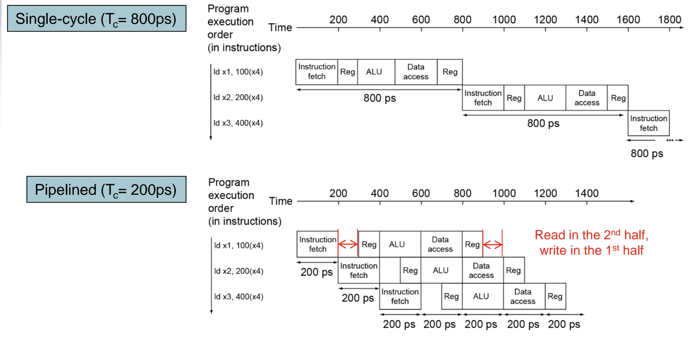
⚠️ 图中红字重点提醒：为了解决数据在同一周期内同时读写的冲突（结构冒险），寄存器文件被设计为“前半周期写，后半周期读 (Write in the 1st half, Read in the 2nd half)”。
(1) 理想加速比公式：如果在理想状态下（各阶段完全平衡，且无冒险暂停）：
(2) 为什么不能无限增加级数？
* 阶段划分不能无限细（各个阶段耗时难以绝对均衡）。
* 流水线阶段之间需要插入流水线寄存器（Pipeline Registers），这会带来额外的硬件开销和时间延迟。
3.5 面向流水线设计的指令集架构 (Pipelining and ISA Design)¶
RISC-V 指令集天生就是为流水线量身定制的，其优秀的 ISA 特性让流水线实现变得非常简单：
- 所有指令长度固定（32位）：使得 IF 阶段可以在单个周期内轻松完成取指（相比之下 x86 指令长度从 1 到 15 字节不等，极难流水化）。
- 指令格式少且规整：寄存器编号位置固定，处理器可以在 ID 阶段一边译码，一边同时读取寄存器。
- Load/Store 寻址模式简单：可以在 EX（第3阶段）专门计算地址，在 MEM（第4阶段）专门访问内存，各个阶段职责分明。
IV. 五级流水线数据通路设计 (Pipelined Datapath)¶
在明确了流水线的五级划分（IF, ID, EX, MEM, WB）之后，我们需要对原有的单周期数据通路进行物理改造。其核心在于打破单周期内一通到底的信号流，将其分隔为独立的五个运作区间。
4.1 流水线寄存器 (Pipeline Registers)¶
为了将执行阶段隔离开来，我们必须在相邻的流水线级之间插入流水线寄存器。这些寄存器的作用是保存前一个周期产生的、供后续周期使用的信息（数据和控制信号）。
处理器中一共需要四个流水线寄存器，分别命名为：
- IF/ID 寄存器
- ID/EX 寄存器
- EX/MEM 寄存器
- MEM/WB 寄存器
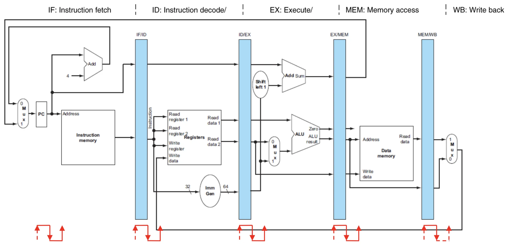
图中新增的四条垂直的浅蓝色竖条即为流水线寄存器。需要注意的是，大部分信号是从左向右 (Left-to-right) 流动的，但有两种情况是从右向左 (Right-to-left) 流动的：一是 WB 阶段写回寄存器文件，二是计算出的下个 PC 值写回 PC 寄存器。这种反向的数据流向是导致流水线“冒险 (Hazards)”的原因之一。
4.2 指令在流水线中的流转（以 Load 指令为例）¶
我们以一条 lw（Load）指令为例，看看数据是如何在各个阶段中穿梭的：
- IF (取指)：从指令内存中取出指令，并存入
IF/ID寄存器；同时PC+4的值也存入该寄存器，以备后续可能使用。 - ID (译码)：利用
IF/ID中的指令读取寄存器文件，将读出的两个操作数，连同符号扩展后的立即数一起，存入ID/EX寄存器。 - EX (执行)：从
ID/EX取出基址和立即数进入 ALU 计算内存地址，将计算得到的地址存入EX/MEM寄存器。 - MEM (访存)：利用
EX/MEM中的地址去读取数据内存，将读出的数据存入MEM/WB寄存器。
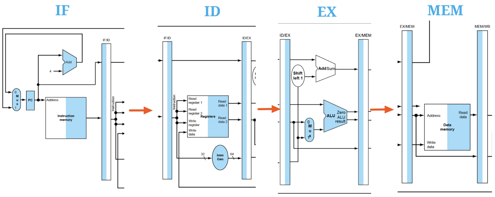
4.3 关键避坑：目标寄存器写回的“时空错位”问题¶
在上述 WB (写回) 阶段中，如果我们直接用此时取指阶段连过来的指令线（Instruction[11:7]）去决定写回哪一个目标寄存器（rd），会发生严重的逻辑错误！
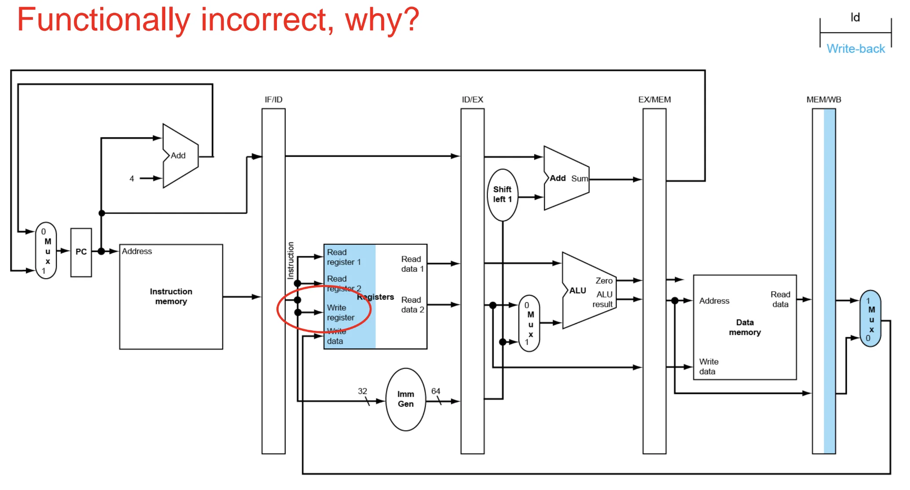
图中的红圈标出了错误的地方。因为当
lw指令到达第 5 级（WB 阶段）时，第 1 级（IF 阶段）早就已经是它后面的第 4 条指令了！此时 IF 级暴露出来的 rd 编号是别人的，这样会导致lw读出的数据写进了错误的寄存器。
修正方案 (Corrected Datapath)：
属于某条指令的任何信息，如果在后面的阶段才用到，就必须由流水线寄存器一级一级地“接力”向后传递。
因此，我们需要将 lw 指令的目标寄存器编号（Instruction[11:7]）存入 IF/ID，传给 ID/EX，传给 EX/MEM，最后传给 MEM/WB。在 WB 阶段时，从 MEM/WB 寄存器中取出该编号并连回寄存器文件的写入端口。
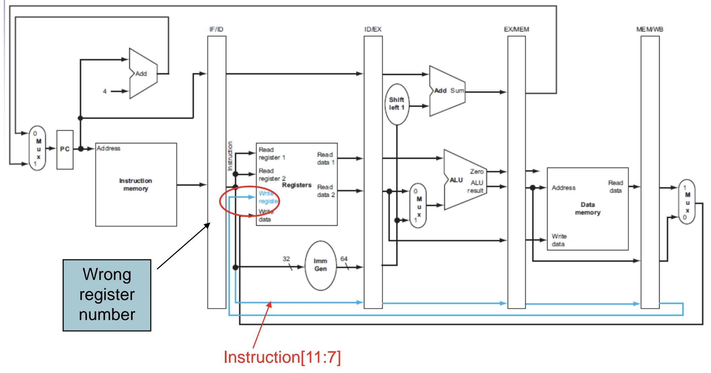
图中下方有一条醒目的浅蓝色线（标有 Instruction[11:7]）。这条线展示了正确的寄存器编号是如何穿越重重流水线寄存器，安全抵达写回阶段的。
4.4 其他指令的流转特点（以 Store 为例）¶
与 Load 相比，Store (sw) 指令的前三个阶段基本类似，但在最后两个阶段有所不同：
- MEM (访存)：从
EX/MEM中不仅要取出算好的地址，还要取出要写入的数据（这个数据在 ID 阶段读出后，一直沿着流水线寄存器传到了这里），并将其写入内存。 - WB (写回)：Store 指令不需要写回寄存器，因此在这个阶段它什么也不做 (Nothing to do)。
4.5 流水线状态的图示法¶
为了分析复杂的流水线，我们常用两种图表来表示：
- 多周期流水线图 (Multi-Cycle Pipeline Diagram)：横轴是时钟周期，纵轴是指令序列。展示多条指令在时间轴上的重叠情况。（分为带有部件图标的详细版，和只写简称的简化版）。
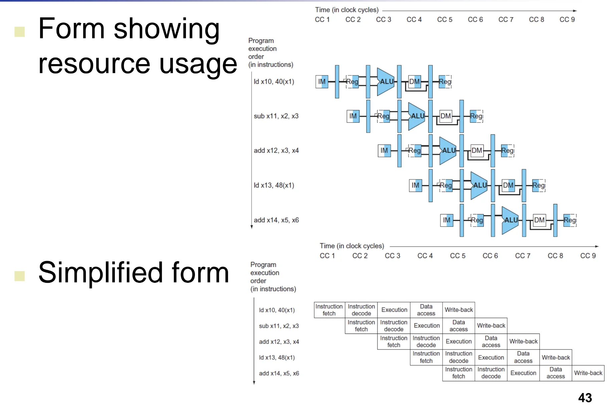
- 单周期流水线图 (Single-Cycle Pipeline Diagram)：固定某一个特定的时钟周期，宏观地查看当前流水线数据通路中，各个组件分别正在为哪条指令服务。
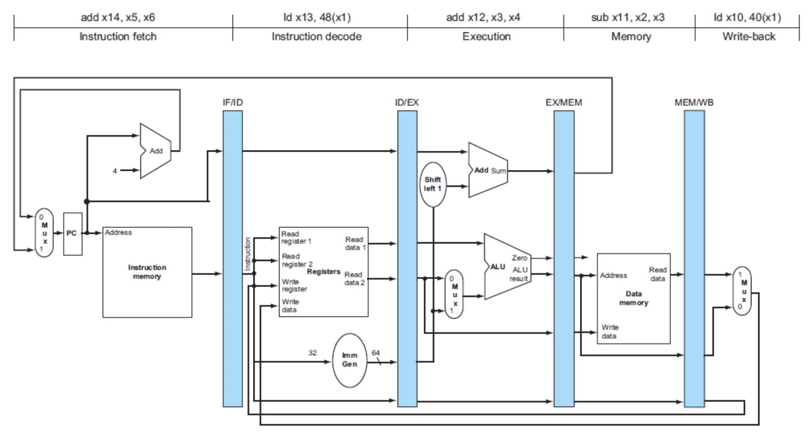
4.6 考虑流水线控制信号的完整流水线数据流图¶
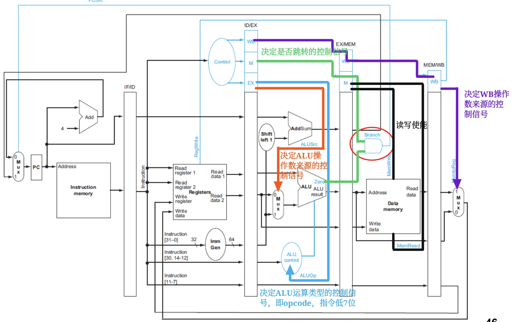
V. 总结¶
5.1 并行性 (Parallelism) 的分类总结¶
这是提升处理器性能的最核心思想，课件将其概括为两大类：
-
时间并行性 (Temporal Parallelism)：
- 核心：流水线技术。
- 原理：将任务划分为多个阶段，在时间轴上重叠处理。
- 优点：能够有效缩短时钟周期（流水线级数越多，单级工作量越小，频率越高）。
- 挑战：处理各种“冒险 (Hazard)”（如数据依赖、跳转预测失效）的代价增大，且如果中断发生，恢复现场更复杂。
-
空间并行性 (Spatial Parallelism)：
- 核心：多功能单元、多核架构。
- 原理：通过复制硬件资源来同时执行多个任务（例如：多个 ALU、多发射技术、多核处理器）。
- 优点：直接提升系统的计算处理能力。
5.2 流水线总结 (The BIG Picture)¶
最后对本章的流水线知识进行总结：
- 提高吞吐量：流水线的初衷是提高单位时间内处理指令的数量（Instruction Throughput），而不是为了让单条指令跑得更快（Latency 几乎不变，甚至因为寄存器开销略有增加）。
- 并行执行：流水线允许五条指令在同一时刻处于不同的处理阶段。
- ISA 的支撑：指令集设计（如 RISC-V）对流水线性能至关重要。
- 思考题：为什么要划分成“五级”？因为这五个阶段（IF, ID, EX, MEM, WB）在功能逻辑上相对独立，且耗时相对均衡，是平衡性能与复杂度的最优解之一。
VI. Pipeline Hazards¶
Hazard：situations that prevent the next instruction in the instruction stream from executing during its designated clock cycle. Hazards cause pipeline stalls (bubbles), which reduce performance.
冒险：指在流水线中，下一条指令无法在预定的时钟周期内执行的情况。冒险会导致流水线停顿（气泡），从而降低性能。
Hazards 的种类：
- Structure hazards: a required resource is busy.
- Data hazards: need to wait for previous instruction to complete its data read/write.
- Control hazards: deciding on control action depends on previous instruction.
结构冒险：所需资源正在被占用。
数据冒险：需要等待前一条指令完成其数据读/写。
控制冒险：控制动作的决定依赖于前一条指令。
6.1 结构冒险 (Structural Hazards)¶
Conflict for use of a resource
In RISC-V pipeline with a single memory
- Load/store requires data access
- Instruction fetch would have to stall for that cycle
IF阶段和访存指令 (Load/Store) 都需要访问内存，如果内存资源只有一个，就会发生结构冒险，导致 IF 阶段必须停顿等待。
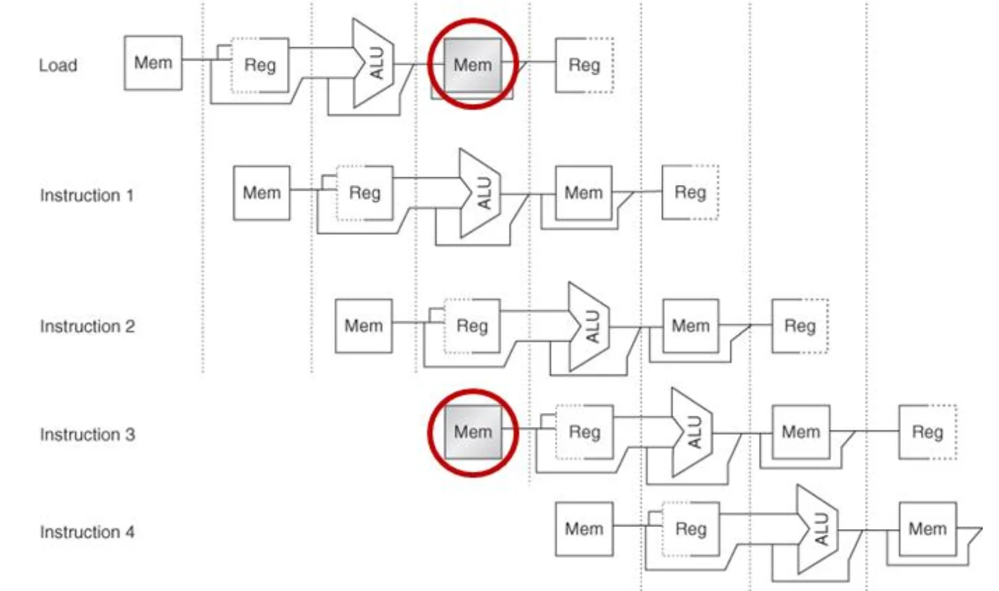
6.2 数据冒险 (Data Hazards)¶
6.2.1 数据冒险¶
一条指令的执行依赖于前一条指令完成数据访问。
例如：
第一条指令要在 WB 阶段才会将结果写回寄存器 x1，而第二条指令在 ID 阶段就需要读取 x1 的值，这时就会发生数据冒险。
一种办法就是第二条指令间隔两个周期再发送：
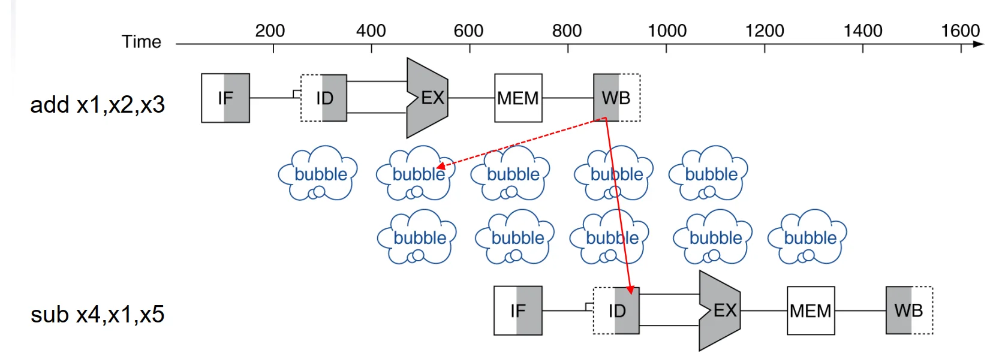
第二种办法：结果一旦计算出来就立即使用，无需等待其存入寄存器，这种方式需要在数据通路中增加额外的连接
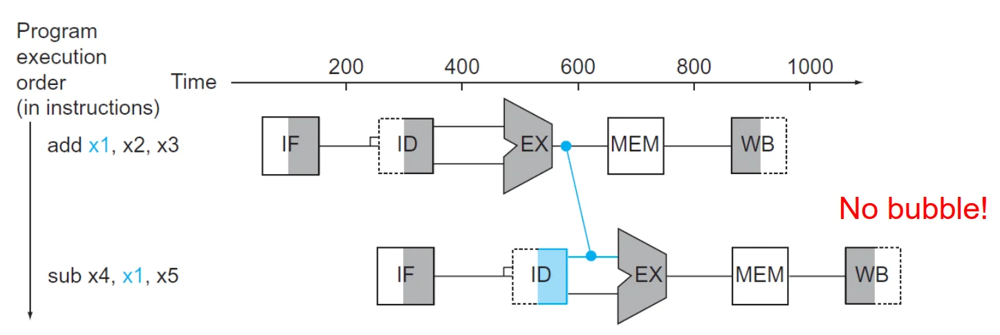
- 对于 R 型指令，最早能够拿到数据的时机是
EXE阶段，因此第二条指令下一个周期可以正常发送； - 对于 Load 指令，最早能够拿到数据的时机是
MEM阶段，因此第二条指令需要间隔一个周期再发送。因此中间还是会有一个气泡，如图：
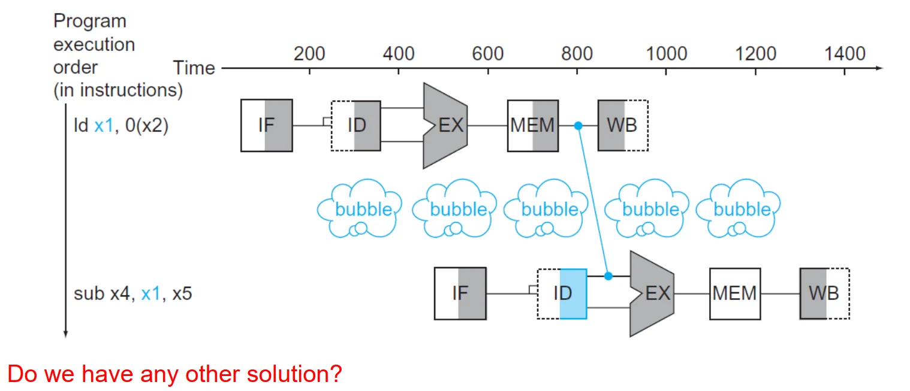
我们也可以从 Code 层面尽量避免这种冒险发生：
比如这里的第 2, 3 行和第 5, 6 行的数据冒险可以通过调整指令顺序解决（或者说在空 cycle 中插入其他指令）
1: lw x1, 0(x31)
2: lw x2, 4(x31)
3: add x3, x1, x2
4: sw x3, 12(x31)
5: lw x4, 8(x31)
6: add x5, x1, x4
7: sw x5, 16(x31)
\(Rightarrow\)
1: lw x1, 0(x31)
2: lw x2, 4(x31)
3: lw x4, 8(x31)
4: add x3, x1, x2
5: sw x3, 12(x31)
6: add x5, x1, x4
7: sw x5, 16(x31)
第一种情况需要 13 个 cycle, 第二种情况需要 11 个 cycle 。
数据冒险的复杂性：一串指令中可能会有很多指令存在数据冒险，需要解决：
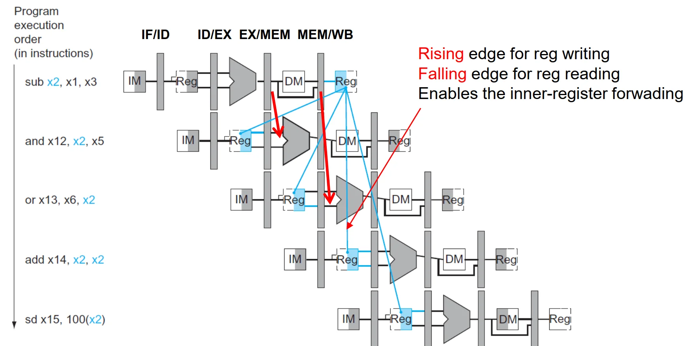
图中的寄存器设计为上升沿写、下降沿读，通过插入 forwarding 结构 就能不插入气泡解决数据冒险问题。
6.2.2 Forwarding 结构——解决 R 指令 Hazard¶
第一个条件：只有访问同一个寄存器才会触发 forwarding 机制。更明确地说：
需要检查 ID/EX 阶段的 rs1 和 rs2 是否与上一条指令的 rd 相同，如果相同，则需要触发 forwarding。
实现方法，在 EX 阶段增加 两个 MUX 来选择 ALU 的输入来源：
00: 正常从寄存器文件读取的值01: 从MEM/WB寄存器中转发的值 (上两条)10: 从EX/MEM寄存器中转发的值 (上一条)
A10. \(\text{EX/MEM.Register}{\color{red}{Rd}} = \text{ID/EX.RegisterRs1}\)
B10. \(\text{EX/MEM.Register}{\color{red}{Rd}} = \text{ID/EX.RegisterRs2}\)
\(\left.\begin{array}{l} \\ \end{array}\right\}\) Fwd from \(\color{green}{\text{EX/MEM}}\) pipeline reg
A01. \(\text{MEM/WB.Register}{\color{red}{Rd}} = \text{ID/EX.RegisterRs1}\)
B01. \(\text{MEM/WB.Register}{\color{red}{Rd}} = \text{ID/EX.RegisterRs2}\)
\(\left.\begin{array}{l} \\ \end{array}\right\}\) Fwd from \(\color{blue}{\text{MEM/WB}}\) pipeline reg
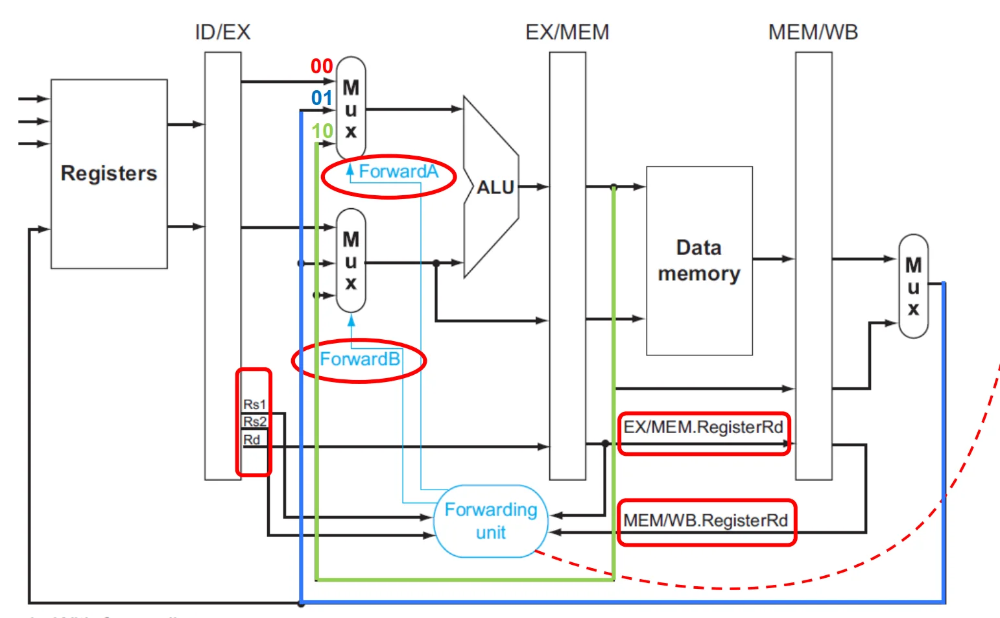
还有两个前提：
- 该指令会将结果写入寄存器！
EX/MEM.RegWrite, MEM/WB.RegWrite - 该指令的目的寄存器 Rd 不为 x0:
EX/MEM.RegisterRd ≠ 0, MEM/WB.RegisterRd ≠ 0
因此，我们就可以给出 forwarding 机制的控制逻辑：
EX hazard
if (EX/MEM.RegWrite and (EX/MEM.RegisterRd ≠ 0) and
(EX/MEM.RegisterRd = ID/EX.RegisterRs1))
ForwardA = 10
if (EX/MEM.RegWrite and (EX/MEM.RegisterRd ≠ 0) and
(EX/MEM.RegisterRd = ID/EX.RegisterRs2))
ForwardB = 10
MEM hazard
if (MEM/WB.RegWrite and (MEM/WB.RegisterRd ≠ 0) and
(MEM/WB.RegisterRd = ID/EX.RegisterRs1))
ForwardA = 01
if (MEM/WB.RegWrite and (MEM/WB.RegisterRd ≠ 0) and
(MEM/WB.RegisterRd = ID/EX.RegisterRs2))
ForwardB = 01
Double Data Hazard
对于如下指令
x1 是 I3 的源寄存器，同时也是 I1 和 I2 的目的寄存器。如果我们使用之前的 forwarding 机制，I3 会同时满足两个条件：
- I2 的目的寄存器
Rd与 I3 的源寄存器Rs1相同，且 I2 会写回寄存器文件，因此会触发 EX hazard 。 - I1 的目的寄存器
Rd与 I3 的源寄存器Rs1相同，且 I1 会写回寄存器文件，因此会触发 MEM hazard 。
解决方案核心关键点：优先从最近的指令 fwd
因此，对于 MEM/WB 的 forwarding 机制，我们需要增加一个条件：如果 EX/MEM 的目的寄存器与 ID/EX 的源寄存器相同，则不触发 MEM/WB 的 forwarding 机制。not (EX/MEM.RegWrite and (EX/MEM.RegisterRd ≠ 0) and (EX/MEM.RegisterRd = ID/EX.RegisterRs1))
MEM hazard
if (MEM/WB.RegWrite and (MEM/WB.RegisterRd ≠ 0)
and not (EX/MEM.RegWrite and (EX/MEM.RegisterRd ≠ 0) and (EX/MEM.RegisterRd = ID/EX.RegisterRs1))
and (MEM/WB.RegisterRd = ID/EX.RegisterRs1))
ForwardA = 01
if (MEM/WB.RegWrite and (MEM/WB.RegisterRd ≠ 0)
and not (EX/MEM.RegWrite and (EX/MEM.RegisterRd ≠ 0) and (EX/MEM.RegisterRd = ID/EX.RegisterRs2))
and (MEM/WB.RegisterRd = ID/EX.RegisterRs2))
ForwardB = 01
考虑 fwd 的 DataPtah:
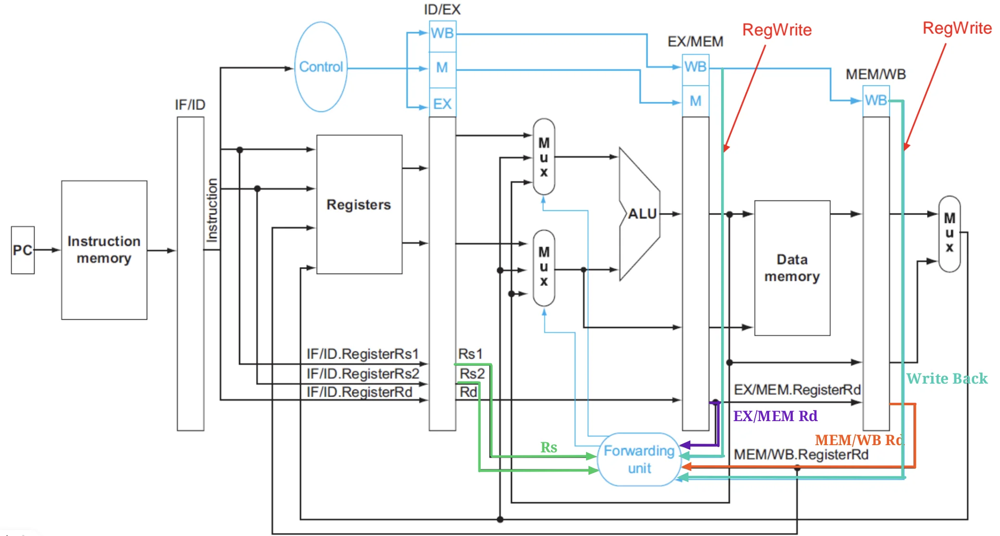
6.2.3 Hazard Detection Unit —— 解决Load-Use Data Hazard¶
命名：
- Load 指令：访问内存的指令，例如
lw x1, 0(x2) - Use 指令：使用load指令的目的寄存器的指令，例如
add x3, x1, x4
这里的 x1 就会发生 Data Hazard.
Load-Use Hazard 即使是使用了 fwd，中间也需要插入一级 bubble。
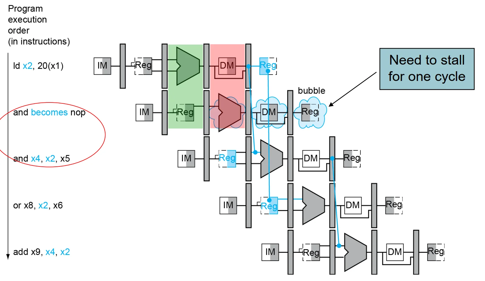
解决方案：
- Check when the using instruction is decoded in ID stage
- ALU operand register numbers in ID stage are given by: IF/ID.RegisterRs1, IF/ID.RegisterRs2
- 满足如下条件时会发生 Load-Use Hazard：
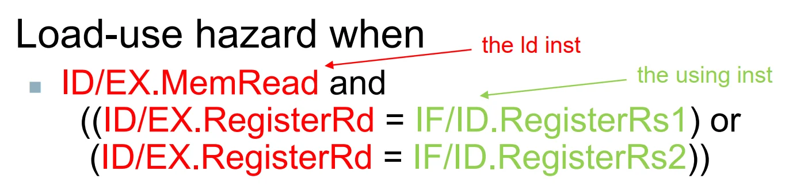
如果检测到了 Load-Use Hazard，就需要停顿并插入 bubble，做法是：
检测： 在 ID 阶段检测 IF/ID.RegisterRs1 和 IF/ID.RegisterRs2 是否与 上一条指令的目的寄存器即（ID/EX.RegisterRd） 相同，且 ID/EX.MemRead 有效。
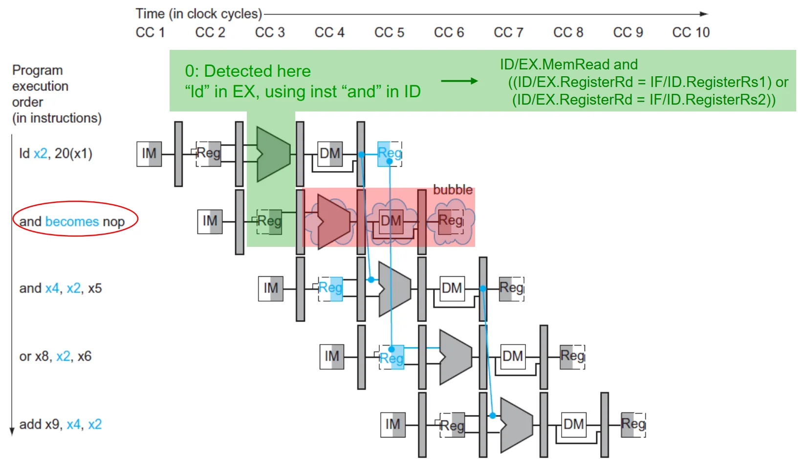
如果检测到了，就必须让当前指令变成 nop，即上图中的：and becomes nop，nop 指令的含义是继续流走，但是不对任何组件产生影响。
但是我们必须让下一个周期继续发送这条指令，不能让其直接流走。所以我们必须将当前指令的信息冻结在 IF/ID 寄存器中，并且我们还需要冻结 PC 寄存器，否则会冲走下一条指令。整个过程如下图所示：（对应1.1, 1.2, 1.3）
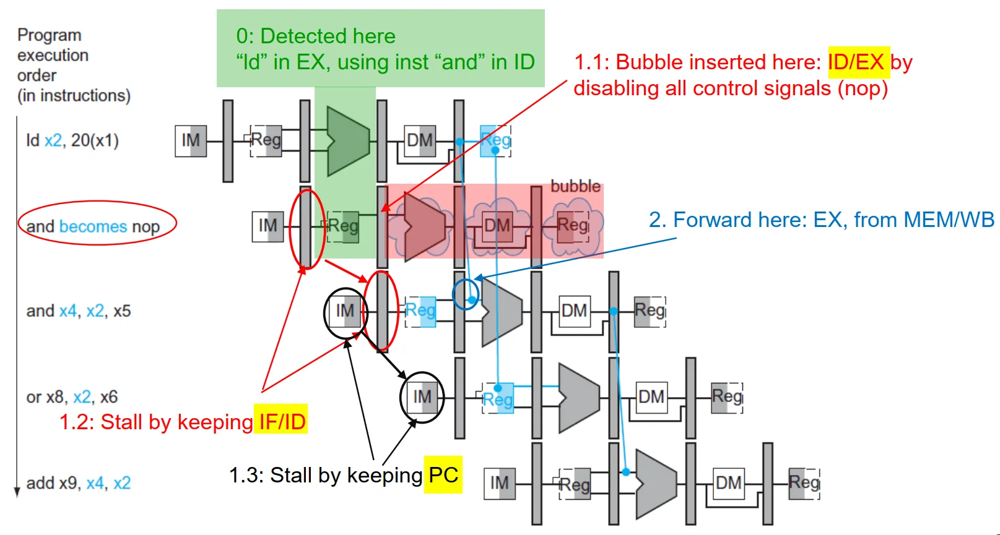
下一个周期，当前指令继续发送，等到 ID 阶段再次检测 Load-Use Hazard 时，发现已经没有了，因为此时检测到的 ID/EX.RegisterRt 以及 ID/EX.MemRead 都已经是 nop 指令了。
然后，这条指令执行到 EX 阶段时，需要继续通过一个 fwd 结构将第一条指令的结果转发给它。（对应 2）
根据上述分析，我们设计出一个 Hazard Detection Unit 来检测 Load-Use Hazard：
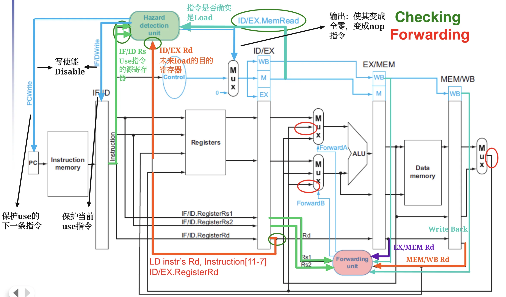
6.3 Control Hazard¶
6.3.1 Control Hazard¶
这一种冒险主要来自分支指令，体现为这类指令对后续指令会有影响，具有这种控制依赖性。
案例：
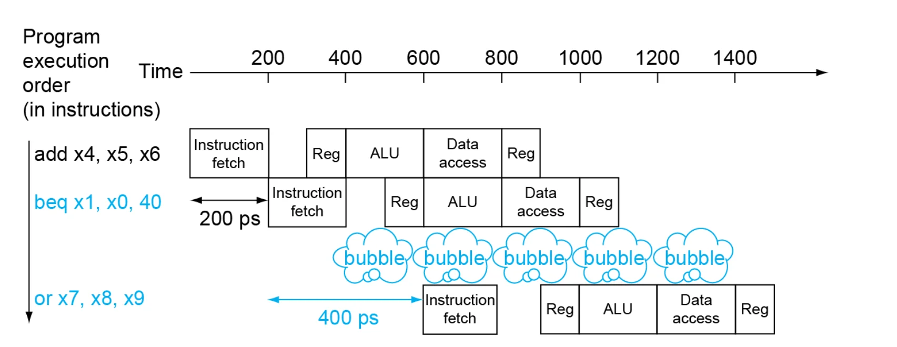
在上面的指令序列中, 分支跳转指令 I2 会影响后续指令的执行。例如 I3 指令本应该在下一个周期继续发送，但是由于 I2 可能会执行跳转，因此 I3 就有可能被冲刷掉(Flush)，导致性能下降。
假设分支跳转指令可以在 ID 阶段就得出结果，即 ID 阶段要完成：
- 比较寄存器
x1和x0的值 - 计算跳转目标地址
PC + 40
在 ID 阶段末，我们就能得到这些结果，但是别忘了此时，IF 流水级在做什么！——它在取 I3 指令！阶段末， I3 指令就会稳定下来，等待下一个时钟周期被 IF/ID 寄存器捕获。如果我们不做处理，I3 就会被错误地执行。为了避免错误，我们只能强制 flush 掉 I3 指令，产生一个气泡，同时这个周期还要完成取正确指令的工作。然后再下一个周期，才能发送新的正确指令。
因此，我们发现，分支指令的控制冒险会导致至少一个周期的性能损失。
关于是否要解决这中间的这个周期的 bubble，业界有两种不同的做法：
6.3.2 Always Stall on Branch¶
一种做法是，无论分支指令的结果如何，我们都冲刷掉指令，强制停顿一个周期。
6.3.3 Branch Prediction¶
这种做法就是继续发送一条指令，有两种选择：
- 一种是 actually not token，即假设不跳转，先去取指。如果发现不用跳转，那么就不会损失一个 cycle；如果发现需要跳转，那么就必须 flush 掉该指令，损失一个 cycle。
- 另一种是 actually token，即假设一定会跳转，先去取指跳转目标地址的指令。
这种方式的收益是什么？
如果预测是准确的话，那么就获得性能收益。
如果预测跳转 (taken)，会有什么影响？
即使预测准确了，没有什么收益，我们还是要插入一个周期的 bubble，因为我们需要等到 ID 阶段才能知道分支指令要跳转的地址。所以一般来说我们会选择预测不跳转 (not taken)，来博取分支指令不跳转的情况，获得一点收益。
此外，我们还要注意一个问题：
- Longer pipelines can’t readily determine branch outcome early. Stall penalty becomes unacceptable. 即：ISA 流水级数越多，分支指令的结果就越晚才能得出，那么分支指令的停顿周期就越多，性能损失就越大。
- 分支预测的越晚，性能损失就越大。例如：假设我们在
MEM阶段才进行 branch prediction，那么分支指令就会停顿 3 个周期，性能损失就更大了。
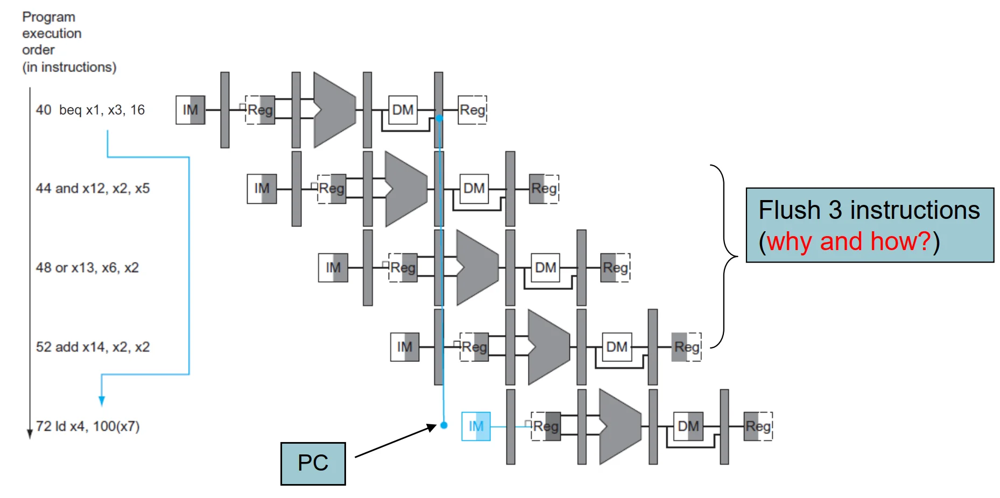
我们当然可以把 branch prediction 提前到 EX 阶段组合逻辑的末尾，从而将 flush 的周期减少到 2。但是这又会带来另一个问题：EX 阶段延迟的延长，如果这是关键路径，那么就会降低整体的时钟频率。
Branch Prediction 的实现方式：
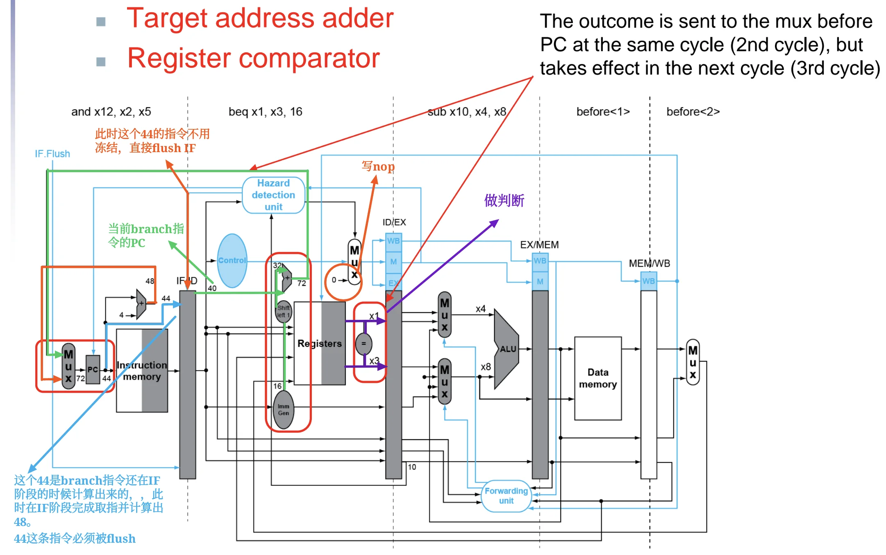
以如下指令为例：
总的来说有如果如下工作要做：（我们假设 branch 指令 PC = 40）
- branch 指令的
ID阶段：比较寄存器x1和x3的值(紫色线条)，计算跳转目标地址PC + 16 << 1 = 72。 - 如果寄存器
x1和x3的值相等，那么更新 PC 寄存器(红色框)，同时 flush 掉编号为 44 的指令，在 IF/ID 寄存器中直接 flush。
6.3.4 Data Hazards for Branch¶
如图：
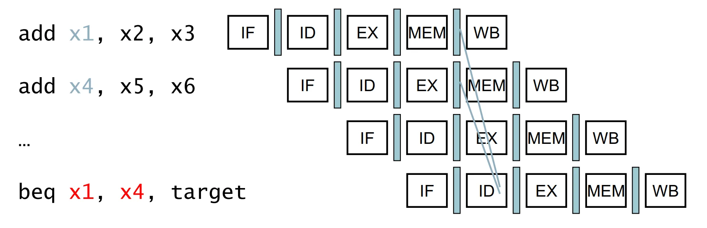
我们面对的指令为：
branch 指令需要用到的寄存器是前面两条 R 型指令的目的寄存器。为了满足要求，我们必须插入一个Bubble，分别从 EX/MEM 和 MEM/WB 获取 x4 和 x1 的值，来进行比较。为此，我们需要要增加一个 fwd 结构，以及在之前比较寄存器的位置（上图紫色线条）增加 mux 来选择操作数来源。
总结来说，如果 branch 指令需要用到前面指令的目的寄存器，并且：
- 前面指令是 R 型，那么我们只需要插入一个 bubble 来等待
EX/MEM寄存器中转发的值； - 前面指令是 Load 型，那么我们需要插入两个 bubble 来等待
MEM/WB寄存器中转发的值。
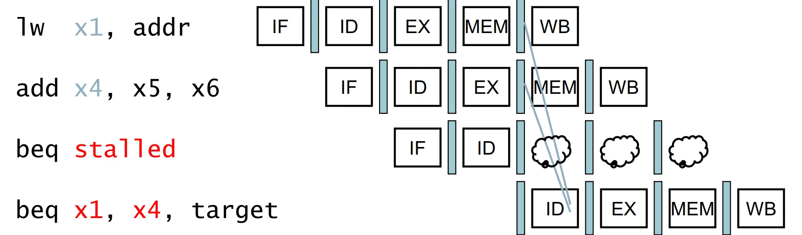
这种现象的本质是 Data Hazard，并非 Control Hazard，只是恰好发生 data hazard 的指令是 branch 指令而已。
6.3.5 Branch Prediction 的策略¶
在更深的超标量流水线中，分支惩罚更为显著
- 在流水线的较后阶段计算分支结果
- 越早越好 → 需要extra hardware → 进行预测
使用 dynamic prediciton
- 通常在第一阶段（取指阶段）进行
- 在早期阶段进行预测，并在结果计算阶段进行验证（对应RISC-V架构中的指令译码阶段）
两种分支预测方式：
(1) Static Prediction：通过编译器在 Code 层面解决掉。
Based on typical branch behavior
示例：循环与条件语句分支
- 预测后向分支被采纳
- 预测前向分支不被采纳
(2) Dynamic Prediction：通过硬件在运行时解决掉。
Hardware measures actual branch behavior: record recent history of each branch
假设未来的行为将延续当前趋势：当预测错误时，在重新获取的同时进行清空，并更新历史记录。准确率可能超过 90%。
Dynamic Prediction 的实现方式示例——BHT
Branch History Table (BHT) 是一种常见的动态分支预测机制。它使用一个小型的表格来记录每个分支指令的历史行为（如最近 2 次或 4 次是否被采纳）。每个分支指令对应一个条目，条目中存储了一个状态（如 2-bit saturating counter），根据历史行为来预测下一次分支是否被采纳。
每次遇到一个分支指令：
- 检测 BHT，期望相同结果
- 开始从 fall-through 或 target 取指令
- If wrong, flush pipeline and flip prediction in BHT
简单来说，就是猜错了更新 BHT，猜对了就不更新。
但是这里还是有很多问题值得探讨：
1. BHT 大小由 PC 可取的值决定（最大 \(2^{32}\) ），肯定不能直接存 \(2^{32}\) 个条目，开销太大，所以直接取一部分长度
2. 只取一部分长度，那这一部分长度对应 PC 的那一段呢？
(1) 1-Bit Predictor: Shortcoming
Inner loop branches mispredicted twice!
来到内层循环的最后一次：
1. 当前 BHT 为 T，决定跳转；
2. 实际上不该跳转，BHT 更新为 N.
3. 然后来到外层循环，下一次进入内层循环，需要跳转时，
4. 当前 BHT 为 N，决定不跳转；
5. 实际上应该跳转，BHT 更新为 T.
所以这里会连续错两次
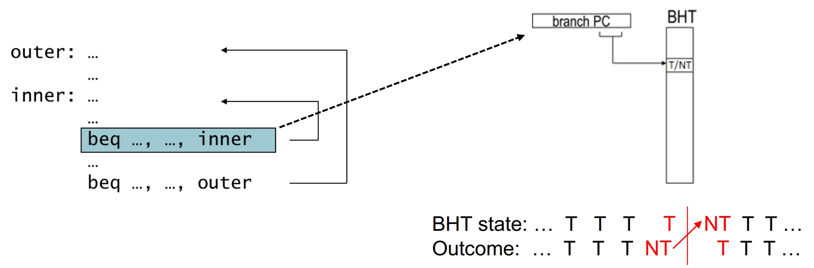
(2) 2-Bit Predictor
2 Bit BHT 可以解决上面那种虽然结构很规律但还是会连续误判的情况。
BHT 本质上就是一个状态机，有四个状态：
1. Strongly Taken (T)
2. Weakly Taken (t)
3. Weakly Not Taken (n)
4. Strongly Not Taken (N)
状态转移图为：
stateDiagram-v2
direction LR
state "Strongly Taken (T)" as ST
state "Weakly Taken (t)" as WT
state "Weakly Not Taken (n)" as WN
state "Strongly Not Taken (N)" as SN
ST --> ST: Taken
ST --> WT: Not taken
WT --> ST: Taken
WT --> WN: Not taken
WN --> WT: Taken
WN --> SN: Not taken
SN --> WN: Taken
SN --> SN: Not taken
预测输出可按“高位决定方向”理解：
ST/WT预测 Taken，WN/SN预测 Not taken。
6.3.6 Branch Target Buffer (BTB)¶
即使是有 Branch Prediction 机制了，还是需要等到 ID 阶段才能知道分支指令的跳转目标地址，这样就会损失一个周期。为了提前获取跳转目标地址，有人提出了 Branch Target Buffer (BTB)。
Branch Target Buffer (BTB) 的原理是：维护一个 Table，这个 Table 的索引是分支指令的 PC 值，值是分支指令的跳转目标地址的 PC 值。
当 IF 阶段取指时，如果发现当前 PC 对应的 BTB 条目有效，那么就直接从 BTB 中获取跳转目标地址的PC值，来取指下一条指令。
此外，这个 Table 中还存放了当前分支指令的 Taken 与 Not Taken 的信息。
这样做之后，当前周期当前分支指令发射（IF阶段）后，下一个周期跳转的指令就可以发射（IF阶段）。
但是有一个代价，这个 Table 的索引方式只能是 PC 值比对，因为 Table 里并非存的是全部指令的 PC ，而是分支指令的 PC 值。因此必须逐个判断当前分支指令是哪一个。
6.4 Summary¶
三种 Hazards 的流水线结构图：
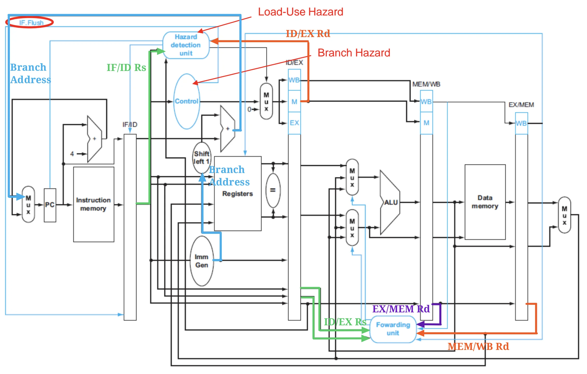